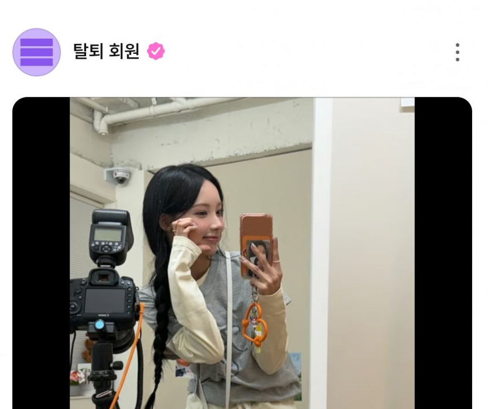
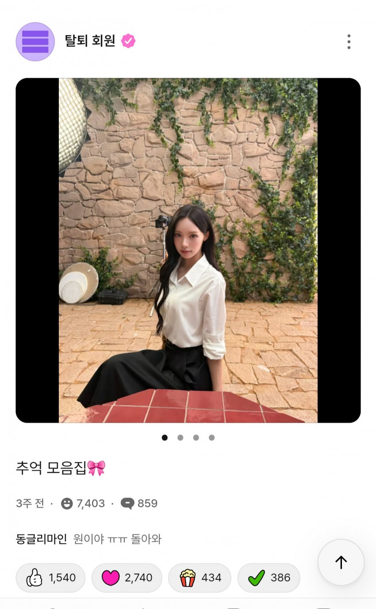
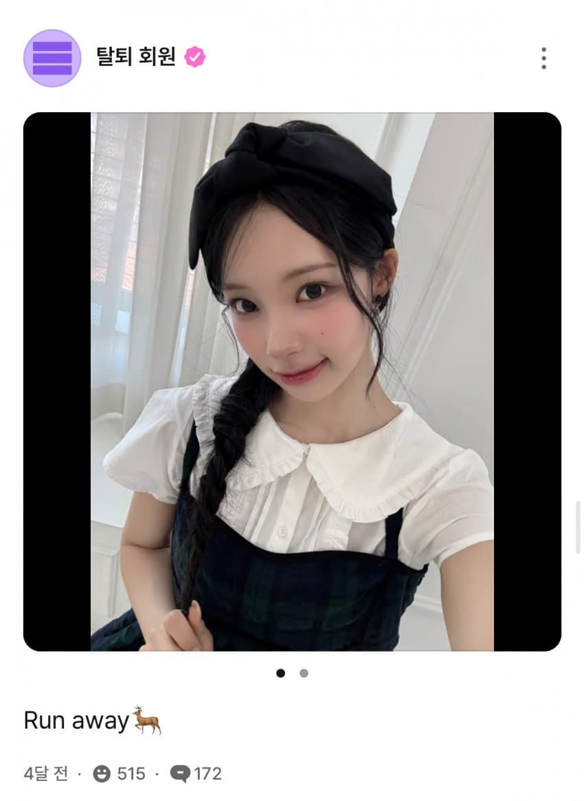
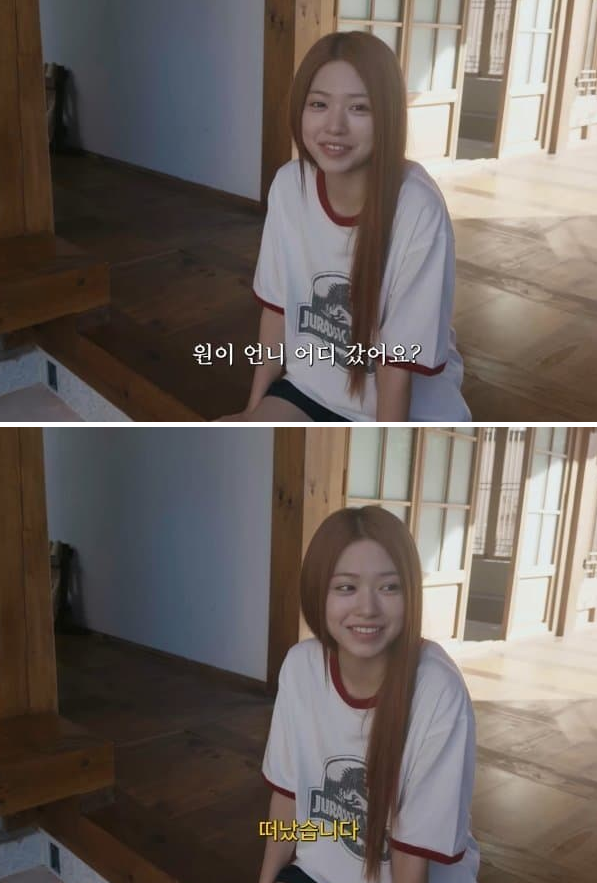
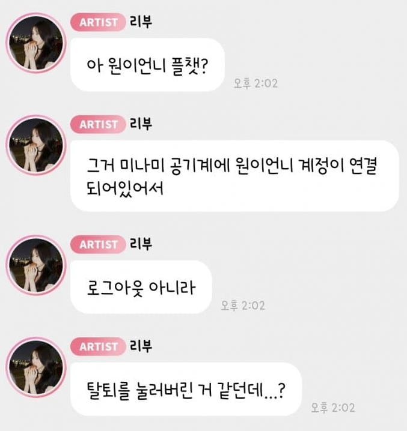
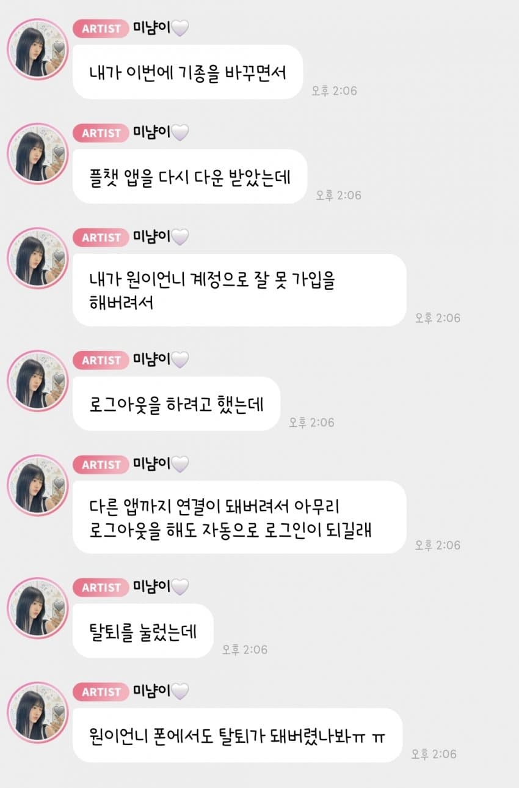
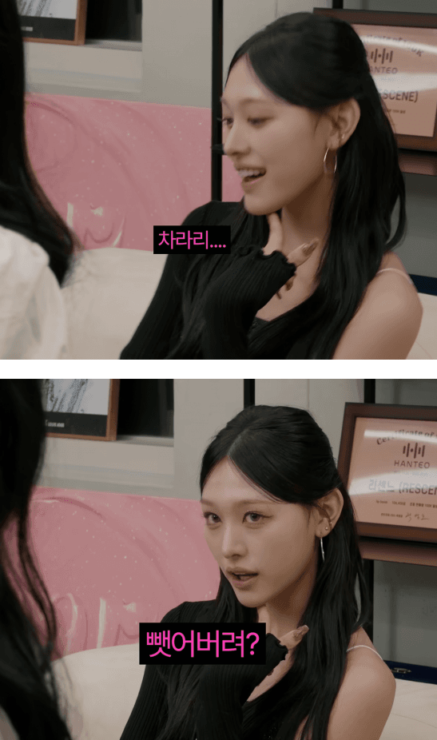

       윤슬은 알지만 로그아웃,탈퇴는 몰라!
댓글
수집 당시 댓글 10개
도르래 · 1 일 전
리센느는 2:1이군
방구석대법관 · 1 일 전
제목 어그로 ㅂㅁ
투명임프 · 1 일 전
제목어그로 수준 꼬라지 참... 길가다 자빠져서 대가리나 깨져라
익명
아니 애들도 라방에서 탈퇴멤버라 그러는데 .. 그정도 까지 화낼일임?
투명임프 · 1 일 전
엄....밑에줄은 괜히 나 짜증난거 엉뚱한데 화풀이한 느낌이긴 하네...수정하려해도 답글달려서 수정 안된다고 뜸 댓글이 넘 과하긴 했음 ㅈㅅ 그거랑 별개로 낚시 목적 제목같은건 전부 비추달고 있어서 이거도 그랬는데 댓글이 넘 과했던건 맞음 미안해
익명
그래 나는 머리 살짝깨질께..개붕이는 행복해라
구름이ㅇ · 1 일 전
야아..그런거 아니야 ㅋㅋ
남양주시진접읍 · 1 일 전
본문 설명도 이상하게 적어놨네... 앱 버그 때문에 로그아웃 안되서 탈퇴한거라는데 단어 모르는 사람으로 만들어버리네 ㅂㅁ
쵸코하임 · 1 일 전
ㄹㅇㅋㅋ ㅂㅁㅂㅁ
오냥코뽕 · 1 일 전
탈퇴회 원이